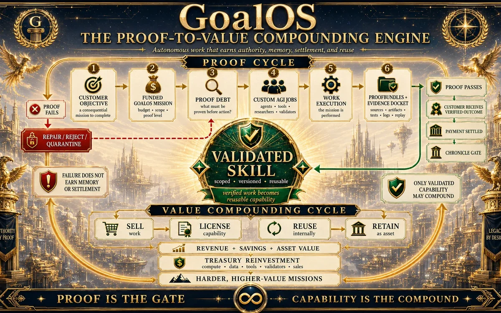

Economic intelligence
Value Realization Dossier Ω
Illustrative use cases for proof-governed economic value.
Explore →
MONTREAL.AI Research
Research, papers, operating institutions and public demonstrations for proof-carrying autonomy, sovereign memory, graph engineering and recursive institutional improvement.
40 canonical records integratedResearch & intelligence
The public research estate documents the proof economy, institutional graph engineering, sovereign memory, recursive improvement and the commercial systems built on top of them.

Illustrative use cases for proof-governed economic value.
Explore →
The recurring control plane for a living institution.
Explore →
The living graph of accepted, reusable and revocable capability.
Explore →A falsifiable institution that sells, proves, remembers and improves.
Explore →Visual corpus
Selected studies make commercial compounding, the proof economy, executive decision and acceleration-aware navigation visible. They remain illustrations—not customer outcomes.


Canonical publications
Every publication remains a research or architecture record unless its visible evidence class states otherwise.
The canonical operating layer that transforms proof debt into bounded work, Evidence Dockets, Chronicle admission and reusable capability.
Encrypted skill capsules, ENS-gated authority, zero-knowledge policy proofs and public commitments without plaintext private intelligence.
One epoch root binds skills, evidence, policies and attestations so future missions inherit only admitted capability.
The canonical proof-to-capability operating system for autonomous AI work.
The operating doctrine for proof-carrying autonomy.
The recurring control plane for a living institution.
Tools to Ride the Singularity: direction, scenario intelligence and successor navigation.
The Verified Action Institution for building anything, anywhere.
Where to sell, hire, build, fund, own IP and deploy infrastructure.
Public demonstrations
Reference theatres simulate or demonstrate protocol mechanics. They are not customer acceptance, live funds, external validation or achieved AGI/ASI unless a specific record proves otherwise.
Three generations, equal constraints, fresh-task transfer and independent browser replays.
Open demo →Mission Contract, Proof Debt, AGI Jobs, Evidence Docket, validation, Chronicle, settlement and rollback.
Open theatre →Prove an improvement, preserve the method and reinvest verified value into the harder mission.
Open demo →